1과목: 진로상담
1. 진로상담자가 갖추어야 할 역량으로 옳은 것을 모두 고른 것은?
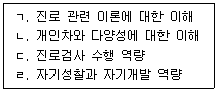
2. 진로상담의 목표로 옳은 것을 모두 고른 것은?
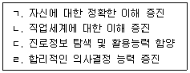
3. 윌리암슨(E. Williamson)의 진로상담과정에서 종합단계에 관한 설명으로 옳은 것은?
4. 다음은 홀랜드(J. Holland)의 직업성격유형이론에 관한 설명이다. ( )에 공통으로 들어갈 용어로 옳은 것은?
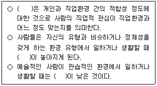
5. 진로상담에서 활용하는 진로가계도(Career Genogram)에 관한 설명으로 옳지 않은 것은?
6. 파슨스(F. Parsons)의 특성요인이론에서 자신에 대한 이해를 증진시키기 위한 특성으로 옳지 않은 것은?
7. 로우(A. Roe)의 욕구이론에 관한 설명으로 옳은 것은?
8. 하렌(V. Harren)의 진로의사결정유형이론에 관한 설명으로 옳은 것을 모두 고른 것은?
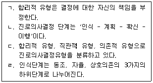
9. 수퍼(D. Super)의 진로발달단계에서 다음과 같은 발달과업이 수행되는 단계는?
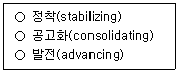
10. 갓프레드슨(L. Gottfredson)의 제한타협이론에서 다음에 해당하는 단계는?
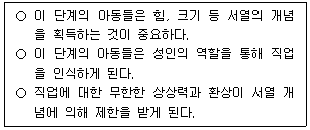
11. 다음 이론을 주장한 학자는?
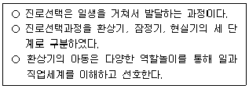
12. 타이드만과 오하라(D. Tiedeman & R. O'Hara)의 진로의사결정이론에 관한 설명으로 옳지 않은 것은?
13. 다위스와 롭퀴스트(Dawis & Lofquist)가 제시한 직업적응 방식에 관한 설명과 개념을 바르게 연결한 것은?
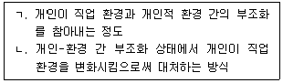
14. 슐로스버그(N. Schlossberg)가 제시한 진로전환 상담에 관한 내용으로 옳지 않은 것은?
15. 미러바일(R. Mirabile)의 퇴직자를 위한 카운슬링모델에서 다음이 설명하는 단계는?
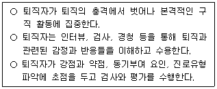
16. 크럼볼츠(J. Krumboltz)의 우연학습이론(happenstance learning theory)을 토대로 한 진로상담에 관한 설명으로 옳지 않은 것은?
17. 사회인지진로이론(SCCT)이 진로상담에 주는 시사점으로 옳지 않은 것은?
18. 사비카스(M. Savickas)의 진로구성주의에 근거한 진로상담의 전략으로 적절하지 않은 것은?
19. 합리성을 토대로 한 전통적 진로상담이론의 한계를 극복하기 위해 최근 강조되고 있는 진로상담 대안이론(진로무질서이론 등)이 등장하게 된 배경으로 옳지 않은 것은?
20. 샘슨 등(J. Sampson et al.)이 제시한 내담자 분류체계를 기준으로 볼 때 “진주”의 진로발달 상태를 바르게 진단한 것은?
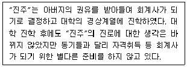
21. 다음의 사례가 보여주는 진로상담기법은?
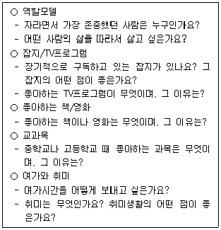
22. 심리검사를 활용한 진로상담에서 내담자와의 작업동맹 전략으로 옳지 않은 것은?
23. 직업분류 및 직업사전에 대한 설명 중 옳지 않은 것은?
24. 청소년 집단진로상담에 관한 설명으로 옳지 않은 것은?
25. 다문화 진로상담에 관한 내용을 모두 고른 것은?
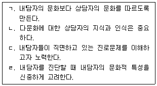
2과목: 집단상담
26. 다음의 집단원이 말하는 얄롬(I. Yalom)의 치료적 요인을 순서대로 나열한 것은?
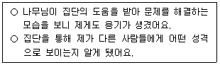
27. 코리(G. Corey)의 '작업집단'의 주요 특성으로 옳지 않은 것은?
28. 집단상담 종결단계에서 집단상담자 역할로 옳은 것은?
29. 집단상담 초기단계의 집단원 특징으로 옳지 않은 것은?
30. 합리적정서행동치료(REBT) 집단상담의 단계를 순서대로 옳게 나열한 것은?
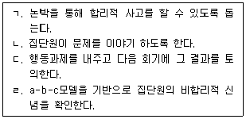
31. 다음의 질문들을 주요 기법으로 사용하는 이론에서 집단상담자의 개입에 관한 설명으로 옳은 것은?
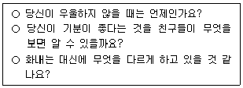
32. 심리극 집단상담의 특성으로 옳지 않은 것은?
33. 다음의 상담기법들을 사용하는 이론의 집단상담자 역할에 관한 설명으로 옳지 않은 것은?
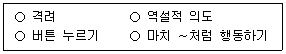
34. 다음의 설명에 해당하는 게슈탈트 집단상담의 심리적 현상은?
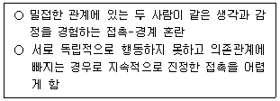
35. 교류분석 집단상담에 관한 설명으로 옳지 않은 것은?
36. 인간중심 집단상담에 관한 설명으로 옳은 것을 모두 고른 것은?
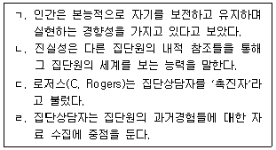
37. 다음에 해당하는 정신분석 집단상담 기법은?
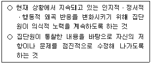
38. 다음 집단상담자의 상담기술에 관한 설명으로 옳지 않은 것은?
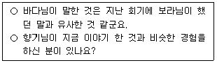
39. 집단상담자에게 전이 반응을 보이는 집단원에 대한 집단상담자의 대처로 옳지 않은 것은?
40. 집단상담자의 역할에 관한 설명으로 옳지 않은 것은?
41. 코리(G. Corey)의 집단상담자 전문적 자질로 옳지 않은 것은?
42. 다음 대화에서 집단상담자가 적용한 기술은?
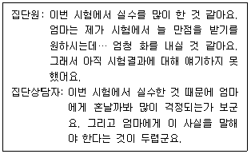
43. 집단상담 계획서에 포함되는 내용으로 옳은 것을 모두 고른 것은?
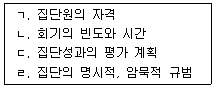
44. 학교에서 운영되는 청소년 집단상담에서 집단상담자의 행동으로 옳지 않은 것은?
45. 청소년상담사 윤리강령의 '다양성 존중'에 해당하는 집단상담자의 태도로 옳은 것은?
46. 비자발적인 청소년 집단상담에서 집단상담자의 역할로 옳은 것을 모두 고른 것은?
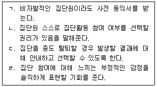
47. 청소년 집단상담의 이점으로 옳은 것을 모두 고른 것은?
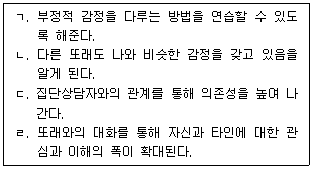
48. 청소년 집단상담의 일반적인 목표로 옳은 것을 모두 고른 것은?
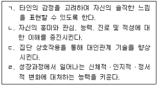
49. 청소년 집단상담 운영 시 집단상담자의 전략에 관한 설명으로 옳지 않은 것은?
50. 감수성 훈련집단에 관한 설명으로 옳지 않은 것은?
3과목: 가족상담
51. 가족상담 초기단계의 상담자 역할로 옳지 않은 것은?
52. 경험적 가족상담에 관한 설명으로 옳지 않은 것은?
53. 구조적 가족상담의 주요 기법과 설명의 연결로 옳은 것은?
54. 보웬(M. Bowen)의 가족상담에서 아래의 사례를 설명하는 개념으로 옳은 것은?
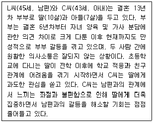
55. 가족상담자의 윤리에 관한 설명으로 옳은 것을 모두 고른 것은?
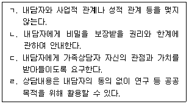
56. 다음 설명에 해당하는 보웬(M. Bowen)의 가족상담 기법으로 옳은 것은?
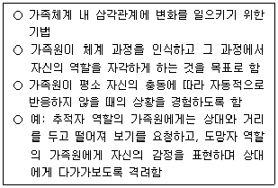
57. 후기 가족상담 이론에 영향을 준 사회구성주의에 관한 설명으로 옳지 않은 것은?
58. 가족상담 이론과 기법의 연결로 옳지 않은 것은?
59. 보웬(M. Bowen)의 가족상담에 관한 설명으로 옳은 것을 모두 고른 것은?
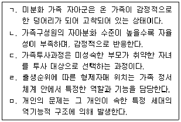
60. 경험적 가족상담의 목표에 관한 설명으로 옳지 않은 것은?
61. 다음의 설명에 해당하는 구조적 가족상담의 개념은?
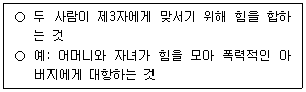
62. 맥매스터 모델(McMaster Model)에서 제시한 가족기능으로 옳은 것을 모두 고른 것은?
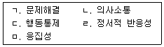
63. 다음 설명에 해당하는 카터(B. Carter)와 맥골드릭(M. McGoldrick)의 가족생활주기단계는?
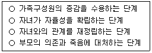
64. 순환모델의 자기보고식 가족사정척도는?
65. 다음 사례에서 가족상담자의 개입으로 옳지 않은 것은?
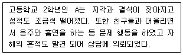
66. 청소년의 집단따돌림에 관한 설명으로 옳은 것을 모두 고른 것은?
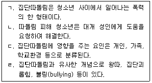
67. 가족상담의 실제에 관한 내용으로 옳은 것을 모두 고른 것은?
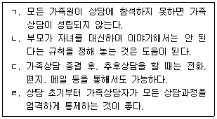
68. 가족상담적 관점에서 가족원의 중독문제에 관한 설명으로 옳지 않은 것은?
69. 가정폭력 가족상담에 관한 설명으로 옳지 않은 것은?
70. 이야기치료에 관한 설명으로 옳지 않은 것은?
71. 전략적 가족상담자로 분류되지 않는 학자는?
72. 대처질문에 관한 설명으로 옳은 것은?
73. 다음에서 설명하는 이야기치료 기법은?
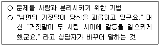
74. 체계론적 가족상담의 개입 특성에 관한 설명으로 옳지 않은 것은?
75. 가족상담의 기본 개념에 관한 설명으로 옳은 것을 모두 고른 것은?
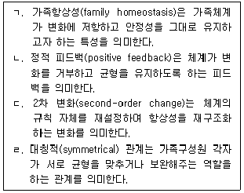
4과목: 학업상담
76. 학습장애에 관한 설명으로 옳지 않은 것은?
77. 커크와 찰팬트(S. Kirk & J. Chalfant) 등의 학습장애 분류에 관한 설명으로 옳지 않은 것은?
78. 칙센트미하이(M. Cskiszentmihalyi)의 몰입(Flow)에 관한 설명으로 옳은 것을 모두 고른 것은?
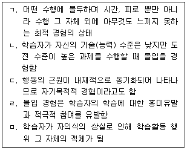
79. 장기기억 속의 지식의 형태와 예를 바르게 제시한 것을 모두 고른 것은?
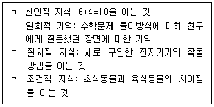
80. 라이언과 데시(R. Ryan & E. Deci)의 동기이론에서 자기결정성을 내면화하는 정도가 낮은 수준에서 높은 수준으로 배열한 것은?
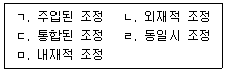
81. DSM-5에서 정의하는 학습장애의 종류에 해당되지 않는 것은?
82. DSM-5의 주의력결핍 과잉행동장애(ADHD)와 관련된 진단기준 가운데 '부주의'에 해당하지 않는 것은?
83. K-WISC-Ⅴ에 포함된 하위 요인에 포함되지 않는 것은?
84. 수렴적 사고와 확산적 사고의 개념을 제시한 이론은?
85. 추정되는 지적 잠재력과 실제 학업성취 간의 차이를 통해 학습장애 여부를 진단하는 것은?
86. 다음에 해당하는 학습장애 지도방법은?
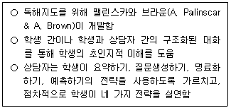
87. 맥키치(W. McKeachie)의 학습전략 분류 중 자원관리 전략에 해당하는 것을 모두 고른 것은?
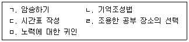
88. 다음에 해당하는 창의적 사고 발상 기법은?
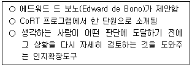
89. 인지학습전략 중 다음에 해당하는 초인지 전략은?
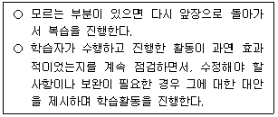
90. 마이켄바움과 굿맨(D. Meichenbaum & K. Goodman)의 자기교시훈련의 단계 중 외현적 모델링 단계에 해당하는 것을 모두 고른 것은?
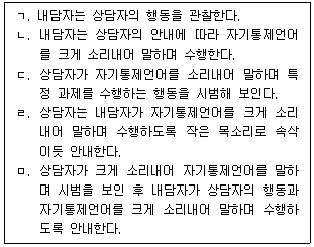
91. 반두라(A. Bandura)의 이론에 근거하여 학습전략 수행시 Ⓐ 단계에 해당하는 것으로 옳은 것은?
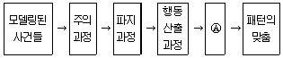
92. 내담자가 작성한 시간관리 매트릭스의 내용에 대해 상담자가 적절하게 개입한 사례는?
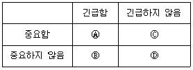
93. 중재반응모형(RTI) 적용 시 순서가 바르게 나열된 것은?
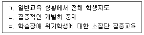
94. 학습문제 진단을 위하여 관찰자가 관찰 대상이나 장면을 미리 정해놓고 그 장면에서 일어나는 행동과 상황, 언어 등을 모두 일어난 순서대로 기록하는 방법은?
95. 반두라(A. Bandura)가 설명한 도덕적 품행과 관련하여 사람들로부터 비난받을 만한 행동을 보다 바람직한 목적을 위한 수단으로 인식하는 것은?
96. 발레란드와 비소네트(Vallerand & Bissonnette)가 구분한 학습동기 단계에서 자율성이 가장 높은 것은?
97. 주의집중력 문제와 관련하여 인지적 측면에서 정보처리 능력에 해당하는 것은?
98. 영재아가 학습부진을 경험하게 될 때 영향을 줄 수 있는 요인에 해당하지 않는 것은?
99. 시험불안의 원인이 시험상황을 위협적인 상황으로 해석함과 동시에 자신의 능력을 평가절하하는 것이라고 보는 이론적 모델은?
100. 학업문제 부진아의 일반적인 진단 기준에 해당하지 않는 것은?